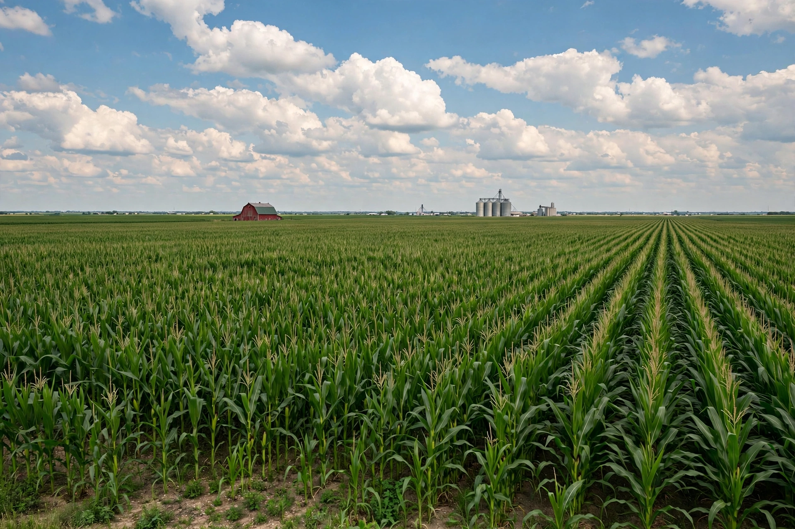

| Corn Belt | |
|---|---|
 | |
| Country | United States |
| Core states | Iowa, Illinois, Indiana, Nebraska, Minnesota, Ohio, Missouri, the Dakotas, Kansas, Wisconsin, Michigan |
| Principal crops | Maize (corn), soybeans |
| Other livestock | Hogs, cattle |
The Corn Belt is a region of the Midwestern United States dominated by agriculture in which corn (maize) is the primary crop. Stretching roughly from Ohio in the east to Nebraska and the Dakotas in the west, and from the Great Lakes south to Missouri and Kansas, it occupies some of the most fertile farmland on Earth — deep, rich prairie soils, level terrain, and rainfall well suited to corn and, increasingly, soybeans.
The region's soils developed under tallgrass prairie and are among the world's most productive. Corn and soybeans are typically grown in rotation; most of the corn crop is used for livestock feed, ethanol production, and processed foods rather than direct human consumption. The Corn Belt is also the centre of American hog production, and much of its farm output moves by river barge down the Mississippi system or by rail to export terminals.
European-American settlement in the 19th century replaced prairie and indigenous farming with commercial agriculture; railroads, mechanisation, hybrid seed corn in the 1930s, and post-war fertiliser use multiplied yields. Farm consolidation has steadily reduced the number of farms while increasing their size. Since the 2000s, demand for corn ethanol under renewable fuel standards has absorbed a large share of the harvest.